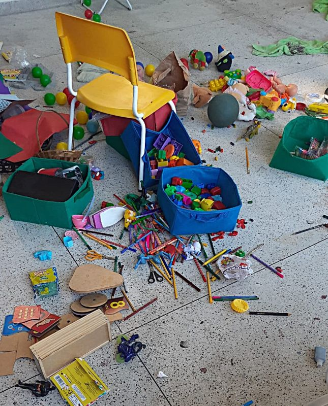
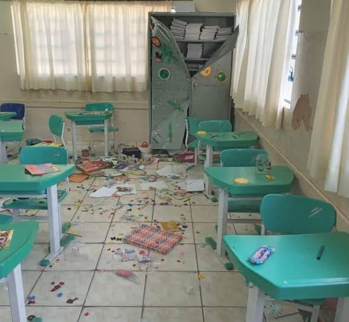
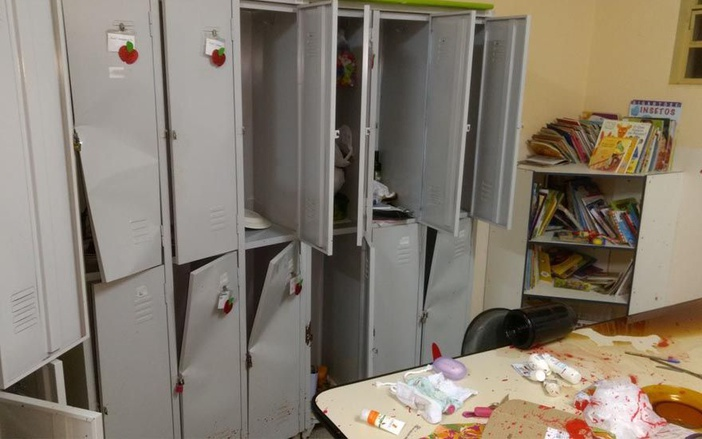
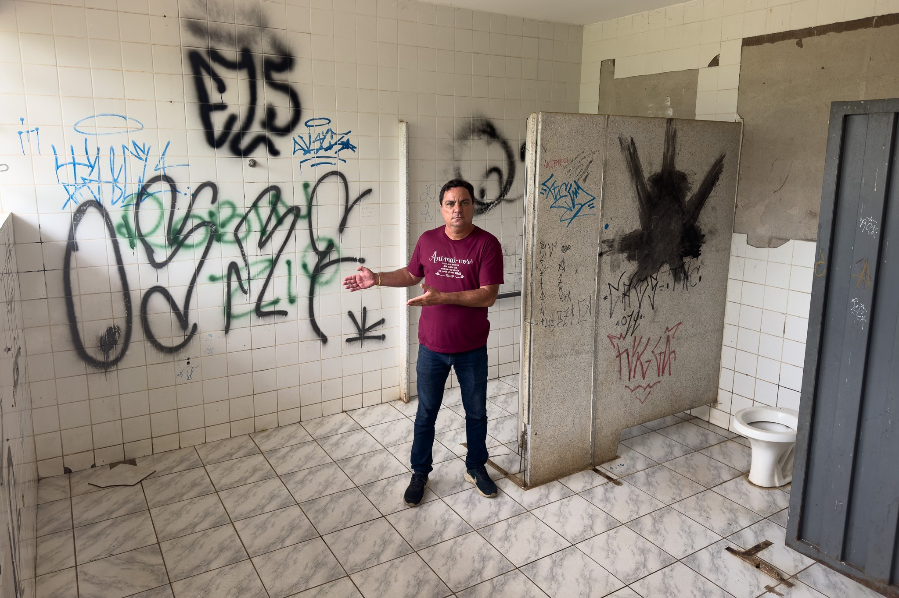

O vandalismo escolar consiste em qualquer ação intencional de destruir, quebrar, pichar ou danificar o patrimônio público ou privado dentro do ambiente de ensino. A escola é um espaço de todos, e preservá-la é um dever de cada estudante.

Entender as causas e as formas como o vandalismo acontece ajuda a comunidade escolar a combater o problema na raiz:
❓ Quais são os tipos mais comuns de vandalismo na escola?Geralmente envolve riscar ou quebrar carteiras, pichar paredes e banheiros, quebrar vidros, danificar portas, arrancar torneiras ou estragar materiais didáticos e computadores.
❓ Por que alguns alunos cometem vandalismo?Muitas vezes funciona como uma forma errada de protesto, busca por atenção, influência de colegas, falta de identificação com a escola ou a falsa sensação de que "destruir o patrimônio público não prejudica ninguém".
❓ Quem paga pelo prejuízo causado?O dinheiro usado para consertar o vandalismo sai dos impostos pagos pelos próprios pais dos alunos. Quando a escola gasta dinheiro consertando portas ou carteiras quebradas, ela 'deixa' de investir em melhorias como novos computadores, ar-condicionado ou eventos culturais.

O vandalismo não prejudica apenas o visual do colégio, ele traz sérios problemas para todos:

A melhor forma de combater a destruição é criar uma cultura de cuidado e respeito pelo ambiente escolar:

Confira os portais utilizados como referência para cada seção do conteúdo: